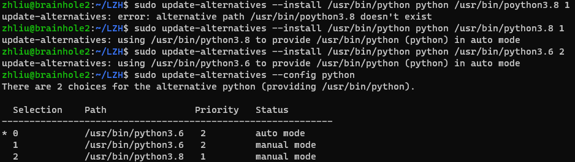

复现THU-DL-SR记录(Outdated)
Python
我们的系统为Ubuntu 20.04.6 LTS，自带Python3.8
使用指令安装Python3.6（可GPT）
配置Python优先级如下图
 image 2.2.1
CUDA
使用以下指令安装CUDA 自动选择的版本是V10.1.243
// sudo apt install nvidia-cuda-toolkit
虚拟环境
在以下位置建立虚拟环境
/home/ylin/DL-SR
建立虚拟环境的指令
// sudo python3 -m venv new_venv
（注意必须要写3）
Linux下启动虚拟环境方法：在以上目录执行以下指令
// source ./test_env/bin/activate
包：
requirements里面提供的包有问题，暂时现在本地推理
清华包需要做出的一些修改
修改1：Keras的import：需要将 from keras.layer.advanced_activations import ...改为from keras.layer
修改2：skimage的import：做以下修改
from skimage.metrics import structural_similarity as compare_ssim
from skimage.metrics import peak_signal_noise_ratio as compare_psnr
from skimage.metrics import mean_squared_error as compare_mse
from skimage.metrics import normalized_root_mse as compare_nrmse
替换原有的
#from skimage.measure import compare_mse, compare_nrmse, compare_psnr, compare_ssim
修改3：
#gpu_options = tf.GPUOptions(per_process_gpu_memory_fraction=gpu_memory_fraction)
#tf.Session(config=tf.ConfigProto(gpu_options=gpu_options))
gpu_options不需要了，直接注释掉
修改4：
pridict.py文件里的优化器重新定义如下
optimizer = tf.keras.optimizers.legacy.Adam(learning_rate=1e-5, decay=0.5)
修改5：
common.py文件里作以下修改
tf.ert
改为
tf.math.erf
tf.fft2d
改为
tf.signal.fft2d
tf.image.resize_images(output, (size_psc, size_psc), 0)
改为
tf.image.resize(output, (size_psc, size_psc), method='bilinear')
tf.depth_to_space
改为
tf.nn.depth_to_space